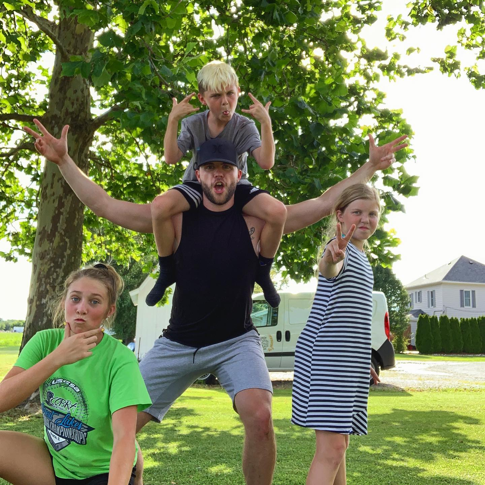

Hello! My name is Brady Baker, and I am currently a full-time athletic
trainer at the University of Minnesota. Before Minnesota, I was an intern
at the University of Colorado and completed my gradute assistantship at the
Universtiy of Illinois! Now my journey has brought me to Prime and I
couldn't be more excited to get started!
I am originally from Wichita, Kansas, but I was rasied most of my life
in a small town in Missouri named Monroe City. That's where my favorite
little people in the world live (pictured above)! Those are my nieces
and nephew Lucy, Reagan, and Ryland! If I'm not beating them in a
game of PIG, you can find us playing video games or board games all day
long! They are seriously the best.
My current job consumes a lot of my time, but when I have some free time
you can find me doing a multitude of things! My main hobby is working out or
being active in some way. I also really enjoy cooking, trying new
recipes, and hosting. I usually host a dinner party once a week with friends!
If I'm feeling lazy I'll be on the Xbox with friends playing whatever we
decide to tackle on the Game Pass.